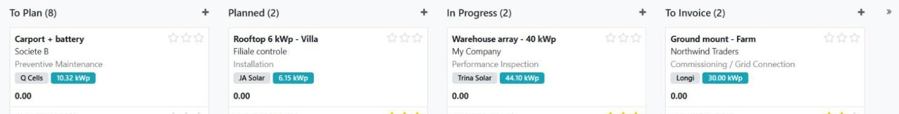
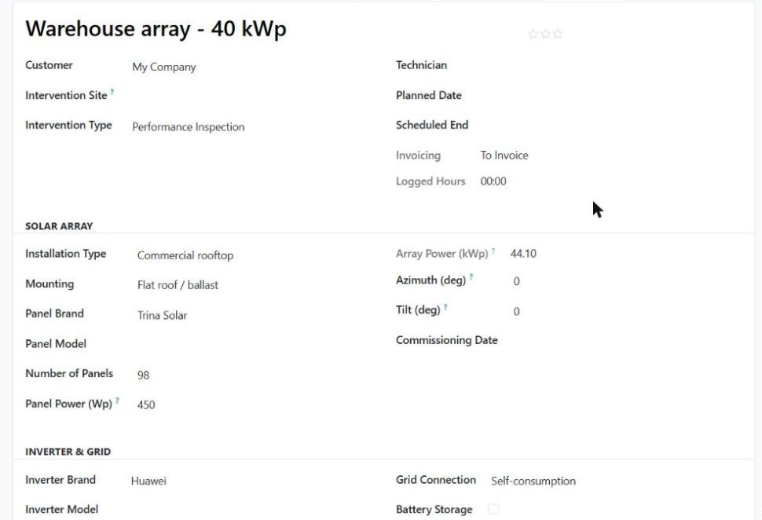
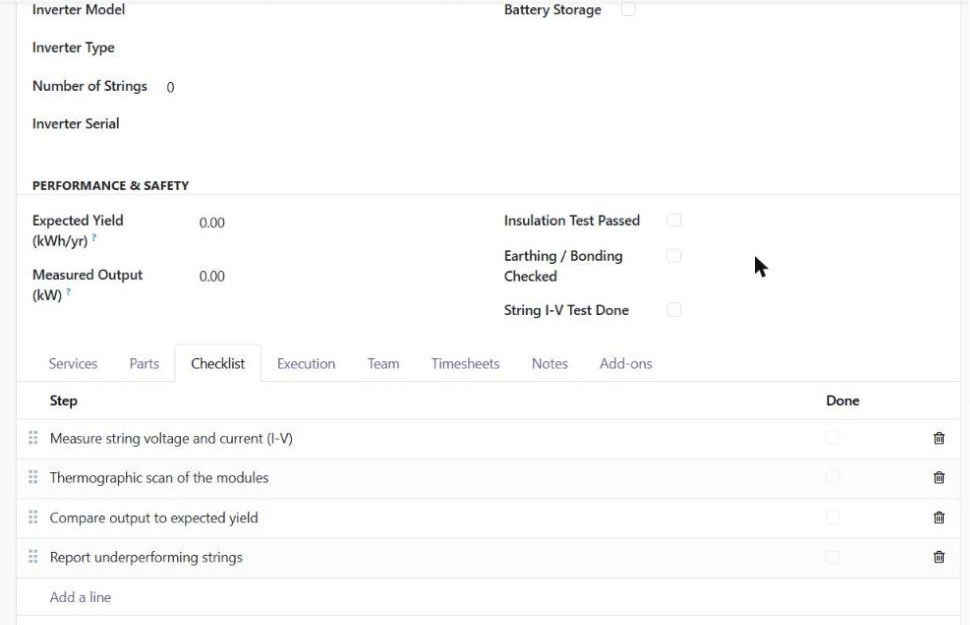
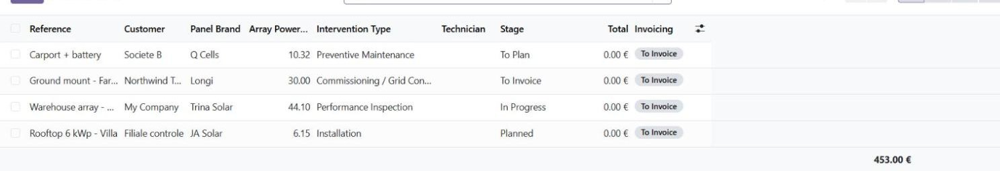

The Odoo field service module built for solar and photovoltaic installers. Every array, every inverter, every service visit in one place. Install, maintain, inspect performance and invoice without leaving Odoo, and run the electrical safety checks the job needs.
A screen that speaks the trade. Open a service order, log the array and its inverter, pick the job type, work through the steps and invoice. Residential roof, commercial roof, ground mount or carport, each job carries the panels, the inverter and the grid setup it runs on, not a generic service form bent into shape.
Each order records the panels, their count and power, and gives you the installed peak power in kWp straight away. The inverter, its type and strings, the battery storage and the grid connection sit on the same screen, with a production and electrical safety block for expected yield, measured output, insulation, earthing and the string I-V test.
The kanban board lines up each array by stage, from To Plan through Planned, In Progress and To Invoice. Panel brand, array power, job type and the technician in charge all show right on the card.

Installation type, mounting, panels and power sit on the order, with the installed kWp computed for you, then the inverter, strings, battery and grid connection, and a production and safety block below. Everything about the array and the job on one screen.

Each job type carries its own steps, ready to use. A performance inspection opens with measure the string I-V, run a thermographic scan, compare output to expected yield and report underperforming strings. The technician ticks as they go and nothing slips through.

The order list shows the customer, the panel brand, the array power, the job and where it stands on billing. One click on Create Invoice turns the labour and parts into an Odoo accounting entry.

Start free, add only what your company needs. Every add-on plugs into the same engine.
We build custom Odoo modules for solar installers. Tell us what you need and we will quote it.
info@expodo.fr · expodo.fr
Expodo
Odoo business modules · Support and customization
expodo.fr